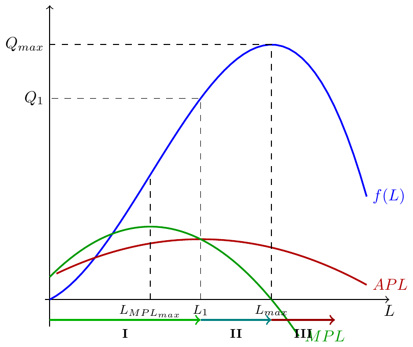

Microeconomia
Etapas do Processo Produtivo e Lei da Contratação
1 Revisão: Etapas do Processo Produtivo
2 Recapitulação: APL e MPL
A curto prazo, com \(K = \bar{K}\) fixo e \(L\) variável:
\[MPL = \frac{\Delta Q}{\Delta L} \qquad APL = \frac{Q}{L}\]
Relação fundamental entre as duas medidas:
- Quando \(MPL > APL\) → \(APL\) está a crescer
- Quando \(MPL = APL\) → \(APL\) está no seu máximo (óptimo técnico)
- Quando \(MPL < APL\) → \(APL\) está a decrescer
3 As 3 Etapas — Diagrama Geral
4 Etapa I — Rendimentos Marginais Crescentes
Intervalo: \(L \in [0,\, L_1[\) onde \(L_1\) é o ponto em que \(MPL = APL\)
- \(MPL\) está a crescer (até ao ponto de inflexão) e depois decresce, mas mantém-se acima de \(APL\)
- \(APL\) está sempre a crescer
- A empresa ainda não está a aproveitar ao máximo a combinação de fatores
5 Etapa II — Zona Económica de Exploração
Intervalo: \(L \in [L_1,\, L_{max}]\) onde \(MPL = APL\) até \(MPL = 0\)
- \(APL\) está a decrescer (mas \(APL > 0\))
- \(MPL \geq 0\): cada trabalhador adicional ainda contribui positivamente para o output
- É aqui que se situam todas as escolhas óptimas de produção
6 Etapa III — Rendimentos Marginais Negativos
Intervalo: \(L > L_{max}\) onde \(MPL = 0\)
- \(MPL < 0\): cada trabalhador adicional reduz o output total
- O produto total está a diminuir
7 Resumo das 3 Etapas
| Etapa | Intervalo (L) | MPL | APL | Output |
|---|---|---|---|---|
| I | \([0,\; L_1[\) | \(> APL\) | crescente | crescente |
| II (ZEE) | \([L_1,\; L_{max}]\) | \(\geq 0\), \(< APL\) | decrescente | crescente |
| III | \(]L_{max},\; +\infty[\) | \(< 0\) | decrescente | decrescente |
ZEE = Zona Económica de Exploração → Etapa II: onde o produtor racional opera.
8 Exemplo Numérico — Tabela Completa
| \(L\) | \(Q=F(K,L)\) | \(APL\) | \(MPL\) | Etapa |
|---|---|---|---|---|
| 0 | 0 | — | — | |
| 1 | 4 | 4.00 | 4 | I |
| 2 | 14 | 7.00 | 10 | I |
| 3 | 27 | 9.00 | 13 | I |
| 4 | 43 | 10.75 | 16 | I (máx MPL) |
| 5 | 58 | 11.60 | 15 | I |
| 6 | 72 | 12.00 | 14 | II (óptimo técnico: APL máx) |
| 7 | 81 | 11.57 | 9 | II |
| 8 | 86 | 10.75 | 5 | II |
| 9 | 86 | 9.56 | 0 | II→III (\(Q_{max}\)) |
| 10 | 78 | 7.80 | \(-8\) | III |
Nota: a tabela usa valores arredondados para ilustração; os pontos de fronteira exactos são calculados analiticamente.
9 Objectivo da Empresa: Maximizar o Lucro
A empresa quer maximizar:
\[\Pi = \underbrace{P \times Q}_{\text{Receita Total}} - \underbrace{W \times L}_{\text{Custo Variável}} - \underbrace{r \times \bar{K}}_{\text{Custo Fixo}}\]
A curto prazo, \(K\) é fixo. A variável de controlo é \(L\). Maximizar \(\Pi\) em ordem a \(L\):
\[\frac{\partial \Pi}{\partial L} = 0\]
10 Derivação da Condição Óptima
\[\frac{\partial \Pi}{\partial L} = P \cdot \frac{\partial Q}{\partial L} - W = 0\]
Ou seja: \[P \cdot MPL = W\]
11 Lei da Contratação — Intuição
\[\underbrace{P \times MPL}_{\text{Benefício Marginal de contratar L}} = \underbrace{W}_{\text{Custo Marginal de contratar L}}\]
- Se \(P \cdot MPL > W\): vale a pena contratar mais um trabalhador (receita adicional supera o custo)
- Se \(P \cdot MPL < W\): o último trabalhador custa mais do que produz — deve-se reduzir \(L\)
- Se \(P \cdot MPL = W\): condição óptima ✓
12 Exemplo Resolvido
Dados: \(Q = K^{0.5}L^{0.5}\), \(\bar{K} = 100\), \(P = 10\), \(W = 20\)
A curto prazo: \(Q = 10L^{0.5}\)
\(MPL = \frac{dQ}{dL} = 5 L^{-0.5}\)
Condição óptima: \(P \cdot MPL = W\)
\[10 \times 5L^{-0.5} = 20\] \[50 L^{-0.5} = 20 \implies L^{0.5} = \frac{50}{20} = 2.5 \implies L^* = 6.25\]
Output óptimo: \(Q^* = 10 \times \sqrt{6.25} = 10 \times 2.5 = 25\)
13 A Relação Produtividade–Salário
Da condição óptima \(P \cdot MPL = W\), podemos escrever:
\[MPL = \frac{W}{P}\]
Esta expressão diz-nos que o produto marginal do trabalho na escolha óptima é igual ao salário real \(W/P\).
14 Verificação Gráfica

A curva \(P \cdot MPL\) é decrescente (por causa dos rendimentos marginais decrescentes). A empresa contrata \(L^*\) onde essa curva cruza o salário \(W\).
15 Exercícios — Escolha Múltipla (1)
1. Uma empresa tem \(Q = 4L^{0.5}\), \(P = 5\) e \(W = 10\). Qual a quantidade óptima de trabalho a contratar?
- \(L^* = 1\)
- \(L^* = 4\)
- \(L^* = 9\)
- \(L^* = 16\)
Solução: A \(MPL = 2L^{-0.5}\). Lei da contratação: \(P \cdot MPL = W \Rightarrow 5 \times 2L^{-0.5} = 10 \Rightarrow L^{-0.5} = 1 \Rightarrow L^* = 1\).
16 Exercícios — Escolha Múltipla (2)
2. A empresa está a operar com \(P \cdot MPL > W\). O que deve fazer para maximizar o lucro?
- Reduzir o output — está a produzir demasiado.
- Manter a produção — já está no óptimo.
- Contratar mais trabalho — o benefício marginal supera o custo marginal.
- Aumentar o preço de venda.
Solução: C Se \(P \cdot MPL > W\), cada trabalhador adicional gera mais receita do que custa. A empresa deve contratar mais até \(P \cdot MPL = W\).
17 Exercício de Desenvolvimento
Enunciado: A empresa ALFA tem a função de produção \(Q = -KL^3 + 12L^2 + 60LK^3\), com \(K=1\) fixo. O preço de venda é \(P = 2\) u.m. e o salário unitário é \(W = 168\) u.m.
Calcule \(MPL\) e \(APL\). Delimite as três etapas do processo produtivo.
Aplique a Lei da Contratação para encontrar \(L^*\) e \(Q^*\).
Verifique que \(L^*\) se encontra na Zona Económica de Exploração.
18 Solução — Desenvolvimento (a)
\[MPL = -3L^2 + 24L + 60\] \[APL = -L^2 + 12L + 60\]
Etapa I → II (\(MPL = APL\)): \[-3L^2 + 24L + 60 = -L^2 + 12L + 60 \implies -2L^2 + 12L = 0 \] \[\implies L(L-6)=0\implies L_1 = 6\]
Etapa II → III (\(MPL = 0\)): \[-3L^2 + 24L + 60 = 0 \implies L^2 - 8L - 20 = 0 \implies (L-10)(L+2) = 0\] \[\implies L_{max} = 10\]
| Etapa | Intervalo |
|---|---|
| I | \([0,\; 6[\) |
| II (ZEE) | \([6,\; 10]\) |
| III | \(]10,\; +\infty[\) |
19 Solução — Desenvolvimento (b) e (c)
Lei da Contratação: \(P \cdot MPL = W\)
\[2 \times (-3L^2 + 24L + 60) = 168\] \[-3L^2 + 24L + 60 = 84\] \[-3L^2 + 24L - 24 = 0 \implies L^2 - 8L + 8 = 0\] \[L = \frac{8 \pm \sqrt{64 - 32}}{2} = \frac{8 \pm \sqrt{32}}{2} = 4 \pm 2\sqrt{2}\]
\(L_1 = 4 - 2\sqrt{2} \approx 1.17\) (Etapa I — não é óptimo)
\(L_2 = 4 + 2\sqrt{2} \approx 6.83\) (Etapa II ✓)
\(L^* \approx 6.83\); \(Q^* = -(6.83)^3 + 12(6.83)^2 + 60(6.83) \approx 650.5\) u.
\(L^* \approx 6.83 \in [6, 10]\) → está na ZEE ✓